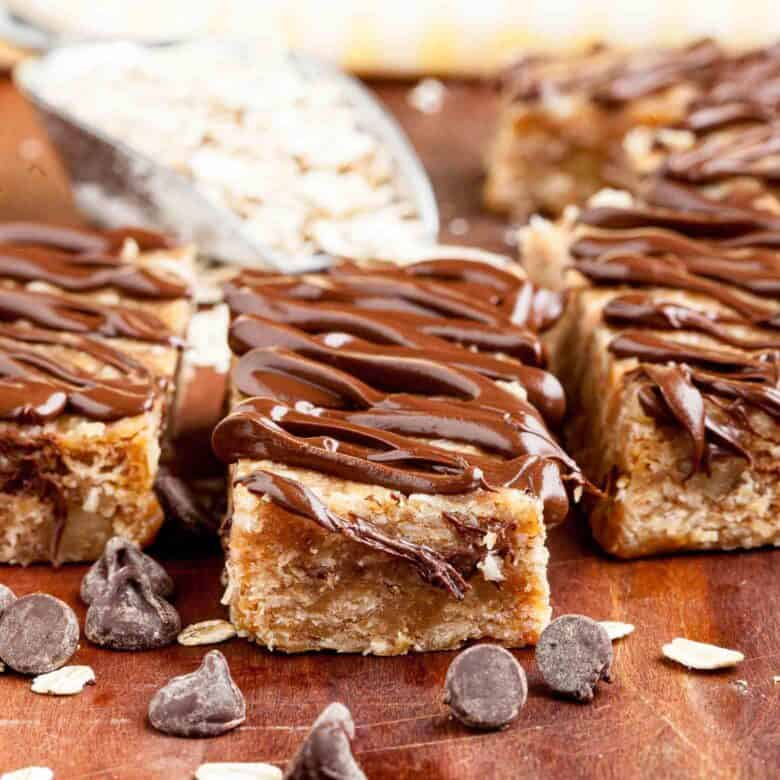
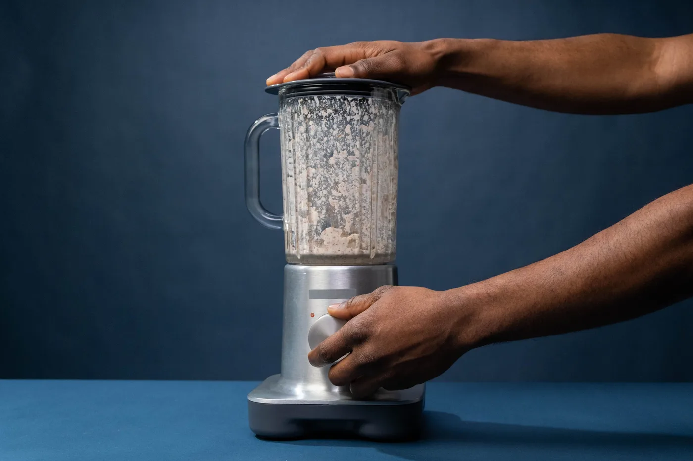

Lemongrass Basil Chicken Stir Fry
Chicken, carrots, broccoli, bok choy and peppers in Kevin's Lemongrass Basil sauce. His own recipe — the wok photo is his.

Cuban Black Beans
Instant Pot black beans: soak overnight, 5–8 minutes at pressure, finish with salt and vinegar or lime.

Black Bean Chimichangas
Air-fryer chimichangas — black beans, brown rice and corn in whole wheat tortillas, crispy with no deep frying.

Ritz Cracker Meatloaf
Beef and Ritz crackers soaked in milk, sautéed peppers and onion, ketchup–sweet chili glaze on twice. Done at 165°F.

Cornbread
Jiffy mix, milk, egg whites, Stevia — pressure cooked in a springform pan. 15 minutes, 10 minutes natural release.

Pesto Fish
Filed as Pesto Fish (rename later). The card itself: baked fish in garlic butter with lemon.

Jambalaya
Zatarain's box, chicken and andouille, browned first, 8 minutes at pressure. His words: super simple.

Salsa (Canned)
Shelly's canned salsa (2010): tomatoes, peppers, onion, jalapeños — simmer two hours, jar.


High Carb Energy Balls
Makes 10 balls — 10 deglet noor dates, Rolled oats, Maple sugar, Vanilla extract.

Maple Cinnamon Oat Recovery Bars
Makes 6 bars — Rolled oats, Banana, Maple syrup, Raw honey.

Savory Potato Cakes
Makes 4 cakes — White potato, Maple syrup, Lemon juice, Pinch of salt.

Sweet Potato Oat Bars
Makes 8 bars — Boiled sweet potato, Rolled oats, 1 banana, Maple syrup.

Low Carb Nut Bars
Peanuts, cashews and almonds in a warm peanut-butter mix, frozen and cut. About 4g net carbs a bar.

No-Bake Keto Granola Bars
Almonds and coconut flakes in golden syrup, sugar-free chocolate melted over the top. 3g net carbs a bar.

5-Ingredient Protein Bars (No-Bake)
Five ingredients: peanut butter, maple syrup, whey protein, oats. 14g protein a bar.

Protein Bars (Low Carb & Sugar Free)
Hazelnuts, almond flour, cocoa, collagen — pressed and chilled. Lowest carb in the box: 2.3g net a bar.

Keto Granola Bars with Coconut
The coconut bar he asked for: coconut inside, coconut oil binding, almonds and pumpkin seeds, chocolate drizzle.

Keto Chocolate Protein Bars (Nut Free)
The nut-free bar: sunflower seeds and seed butter, chocolate protein powder, cocoa.

Apple Date Energy Gel
Makes 1 gel — 5 deglet noor dates, Apple juice, Maple syrup, Pinch of salt.

Beet & Honey Gel
Makes 2 gels — Pure beet juice, Raw honey, Maple syrup, 1-2 pinches of salt.

Grape Molasses Energy Gel
Makes 1 gel — Grape juice, Maple syrup, Raw honey, Molasses.

Mango Gel
Makes 2 gels — Frozen mango, Maple syrup, Coconut water, Pinch of salt.

Orange Maple Honey Gel
Makes 1 gel — Orange juice, Raw honey, Maple syrup.

Pineapple Gel
Makes 3 gels — Pineapple, Maple syrup, Raw honey, Splash of coconut water or regular water.

Watermelon Gel
Makes 2 gels — Watermelon, Raw honey, Pinch of salt.

Natural Electrolyte Drink
Makes 12 oz drink — Coconut water, Maple sugar, Lemon juice, Pinch of salt.